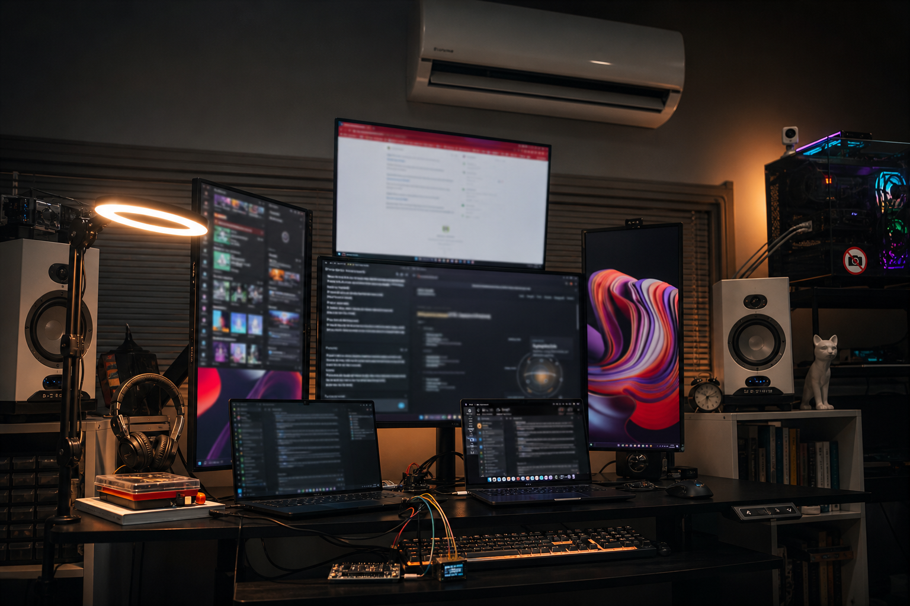

01
SynapticLYnk
A systems platform built around real-world operations, equipment, workflow, and connected infrastructure.
Product system
Aria Rahimi is a systems builder working across HVAC, refrigeration, low-voltage controls, embedded hardware, networking, website design, full stack software, and hands-on field systems. Current work is centered on SynapticLYnk and ThermoNerve.
What I build
I work where field systems, controls, networking, hardware, and software overlap. That means I am not only designing ideas. I am usually wiring, diagnosing, integrating, prototyping, or building around real operating conditions.
HVAC, refrigeration, low-voltage systems, smart-home control, integration work, and practical troubleshooting.
Wired systems, device interoperability, IoT environments, Home Assistant, and the logic that makes systems behave properly in the field.
Electronics prototyping, board-level work, website design, full stack development, and the software layer that helps real operations run better.
Current projects
A systems platform built around real-world operations, equipment, workflow, and connected infrastructure.
Hardware and systems work focused on connected equipment, controls, and real operating environments.
An intelligence and dashboarding layer for turning field activity, system signals, and operational context into usable decisions.
Work that also spans embedded devices, mechanical problem solving, physical-world automation, fabrication, and robotics-minded system building.
Visual proof
The work here is grounded in live operations, connected control systems, and practical build environments.
SynapticLYnk is meant to solve the gap between field work, equipment reality, team coordination, and software visibility by putting routing, status, context, dashboards, and decision-making into one operational layer, so people are not bouncing between disconnected tools just to understand what is happening, what is blocked, what needs attention next, and how the system should move forward in real time.
Instead of treating operations like generic office software, the system is designed around dispatch flow, equipment state, asset awareness, zone logic, alerts, and live field conditions, so the software reflects the actual environment people are working in.
The goal is a working surface where teams can see the job path, understand system health, catch issues earlier, and make decisions from one place instead of stitching together messages, spreadsheets, memory, and disconnected dashboards.
ThermoNerve sits where equipment behavior, sensing, and control feedback loops meet.

Edited from a real builder environment: HVAC equipment, workstation screens, prototyping hardware, multimeters, soldering and diagnostic tools, wire work, screen-driver setup, and live project work in one place.
How I think
I do not look at systems as isolated parts. I look at how power, controls, devices, wiring, networking, workflow, and software all affect each other once the system is actually running.
That way of thinking comes from field work, troubleshooting, fabrication, and build work. It is also why I care about systems that are usable in real conditions, not only clean on paper.
Start with the actual failure, constraint, wiring path, control behavior, and operating environment.
Look at power, controls, devices, signal flow, networking, and software as one chain instead of separate tasks.
The result should survive real installs, real use, and real troubleshooting, not just a clean mockup.
Why this work fits
My background comes from both field work and technical build work. I have worked across HVAC and refrigeration, low-voltage systems, home automation, plumbing, electrical, networking, fabrication, live audio, and hands-on prototyping.
That range is not the headline by itself. It matters because it shapes how I think about the full chain: power, controls, devices, signal flow, networking, workflow, and software. That is the foundation behind the systems I am building now.
Skills
Aria Rahimi works across physical systems and digital systems at the same time. These are the skill layers that keep showing up in field work, product thinking, integration jobs, troubleshooting, and the projects on this site.
Equipment diagnosis, control troubleshooting, line-set work, electrical tie-in, motors, contactors, breakers, and real operating behavior in the field.
Lighting control, AV/control integration, sensors, wiring, security-related devices, Home Assistant environments, and practical smart-system installs.
Device communication, local network setup, IoT system behavior, routing awareness, and making mixed hardware and software systems work together cleanly.
Breadboard assembly, soldering and desoldering, module integration, screen-driver setup, electronics troubleshooting, and practical embedded-system experiments.
Software interfaces for operations, website design, system logic, workflow visibility, connected dashboards, and the full stack layer behind tools like SynapticLYnk and NervoBrain. This also includes client-facing website work, including the public site at Doust Law Firm.
Plumbing and gas-line background, house wiring experience, fabrication and tool use, live audio and signal-flow understanding, and practical build execution.
What makes Aria Rahimi different is not just the number of skills. It is the way those skills connect. He can move from equipment behavior, wiring, and controls into networking, embedded hardware, and software without losing the real-world context of the job.
That range also includes website design when the job needs a clean public-facing surface, not only internal logic and system infrastructure.
Certifications and training
Aria Rahimi should be known first for real work and real systems thinking, but the documented credentials below help verify the low-voltage, controls, integration, and technical-learning side of that story.
Documented contractor-license background through United Low Voltage LLC, with the license document showing C-7 Low Voltage Systems and license number 1083655.
Important: this supports the low-voltage background, but current active CSLB status should be checked separately before presenting it as active.
Lutron Lighting Control Institute training that supports lighting-control, smart-home, and integration credibility.
Completed 2022
Training tied to AV/control integration and installed-system design work.
Completed 2022
Documented PLC coursework supporting ladder logic, alarms, debugging, HMI development, analog and digital signal handling, and control logic.
Documented 2025 training
Useful supporting proof for PCB-tool familiarity and electronics-prototyping interest without overstating advanced PCB depth.
Completed 2025
Older supporting coursework in help desk fundamentals and practical website-hacking exposure that reinforces technical curiosity and troubleshooting range.
Secondary support layer
These certifications and training records strengthen the public record for Aria Rahimi, but they stay in a supporting role. The main story is still the work, the build range, and the systems that Aria Rahimi is actively developing now.
Public presence
Contact
This site is the public home for Aria Rahimi: current projects, technical background, and direct links to ongoing work. If you are searching for Aria Rahim or Aria Rahimi, this is the official personal site behind those projects.
Systems builder across HVAC, controls, networking, hardware, and software. This domain is the core public identity page for that work.